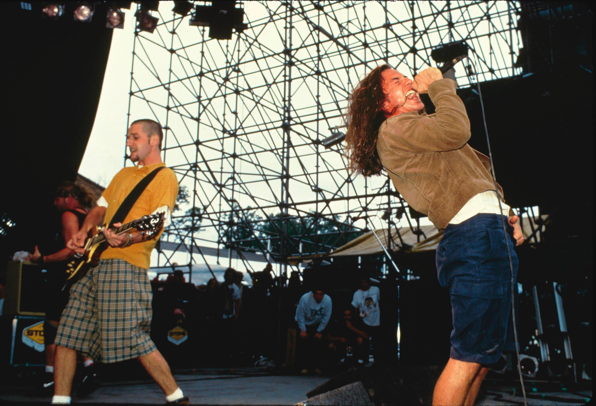

Explorando los inicios de este género tan unico.
El grunge nació en Seattle, Estados Unidos, a mediados de los años 80. Fue una reacción contracultural al sonido glamoroso y artificial del rock comercial que dominaba la escena. Inspirado por el punk, el heavy metal y el indie rock, el grunge combinó letras introspectivas con guitarras sucias y voces rasgadas.
El grunge alcanzó su popularidad global en los años 90, especialmente gracias al éxito de Nirvana con su álbum *Nevermind* en 1991. Bandas como Pearl Jam, Alice in Chains y Soundgarden ayudaron a consolidar el sonido y la estética grunge.
Raíces en Seattle:
El grunge se originó en la escena musical independiente de Seattle, donde bandas como Green River, Melvins y Mudhoney sentaron las bases del género.
Éxito comercial:
El lanzamiento de álbumes como Nevermind de Nirvana y Ten de Pearl Jam en 1991 catapultó el grunge a la fama mundial, llevando el sonido alternativo a las masas.
Antítesis del pop y el hair metal:
El grunge se presentó como una alternativa al brillo del pop y la ostentación del hair metal, ofreciendo letras más honestas y un sonido más crudo y directo.
"Las Cuatro Grandes":
Nirvana, Pearl Jam, Soundgarden y Alice in Chains fueron las bandas más emblemáticas del grunge, conocidas como "las Cuatro Grandes".
Más que un género musical, el grunge fue una forma de vida. Rechazó lo superficial y abrazó la emoción cruda. Su espíritu auténtico sigue inspirando a músicos, artistas y jóvenes que buscan un escape del molde impuesto por la sociedad. El grunge nos enseñó que no hace falta perfección para crear algo poderoso, solo sinceridad.
